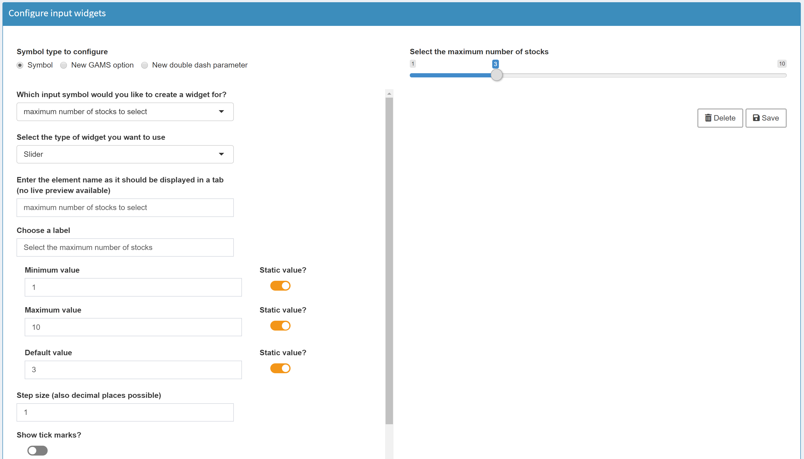
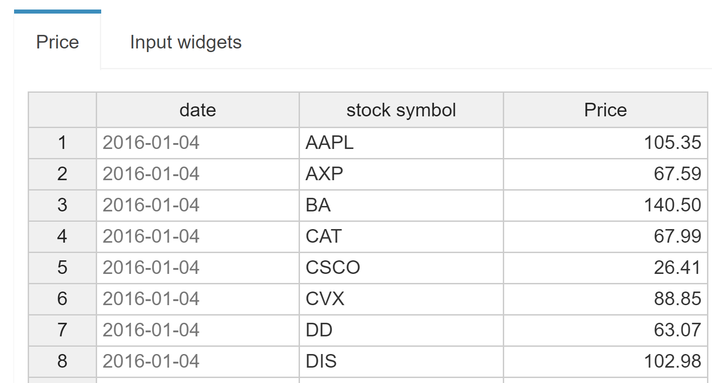
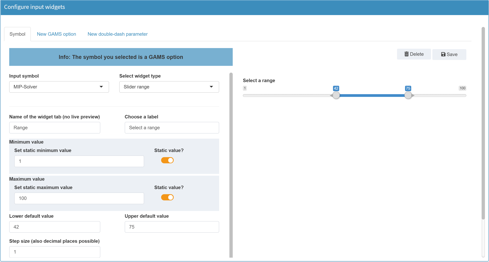
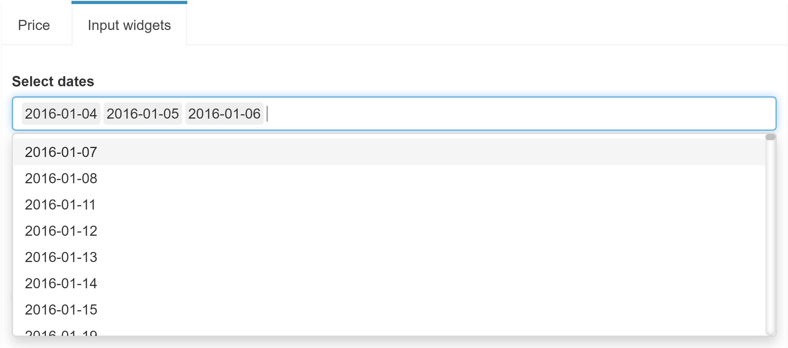
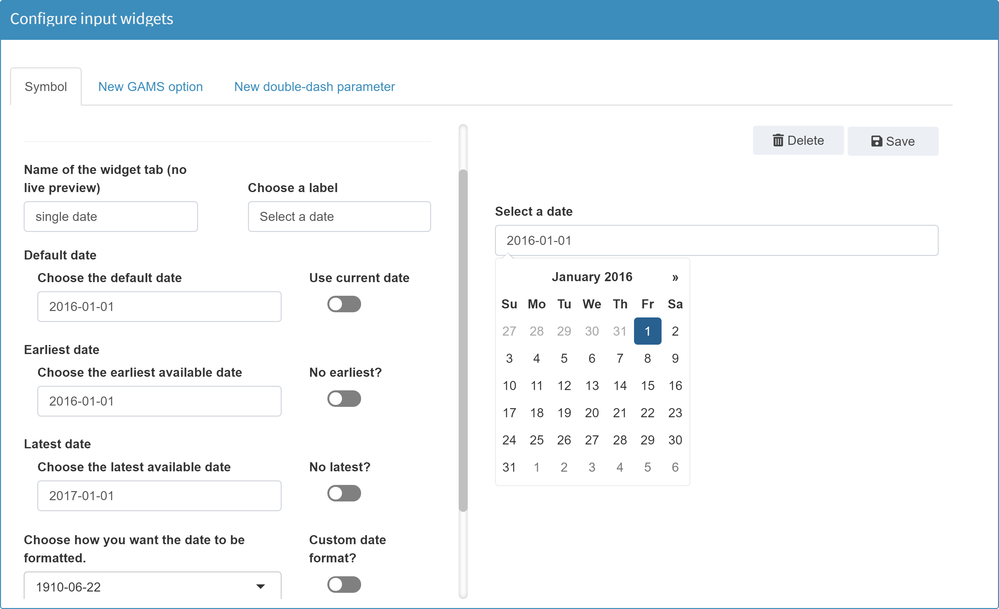
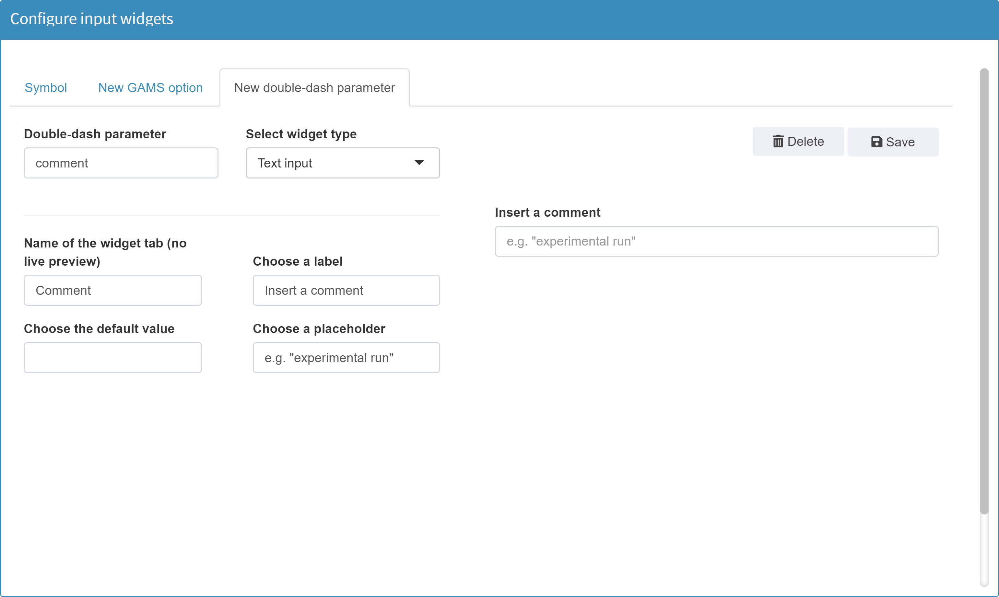

Similar to the dynamic limits of a slider, the choices of a dropdown menu can also be filled dynamically, depending on the loaded data.
Widgets
Slider
Configuration
If the desired slider does not change with changing data sets, it is a good idea to configure it as a slider with static values (lower and upper bound, step size).
Example:

Dynamic limits:
In many cases it makes sense to assign the limits and default values of a slider not with static but with dynamic values. This is done, for example, in the demo model pickstock.
Here, two sliders are used. In the first one the maxmimum number of stocks can be selected, in the second one the number of training days.
In both sliders, the maximum value results from the input data of the parameter price.

The maximum value for the maximum number of stocks is 30, because the used data set price contains 30 stocks. If the user deletes e.g. all values of the stock AAPL from the data, the maximum value of the slider changes dynamically to 29.
The same is true for the second slider for the number of training days. Here the maximum value of 252 results from the number of available dates in price.
In configuration mode we can easily set such dynamic limits. For the first slider the configuration looks like this:

The Static value? box was unchecked for the maximum value. Since the maximum slider value should result from the data of the symbol price, it is selected with the corresponding header stock symbol in which the stocks are contained (see table above). The operator is set to count since we want to count all stock symbols in our data to set the maximum value.
For the calculation of such limits from the data, the following operators are available:

More on Dependencies among Widgets can be found here.
JSON example
Slider with dynamic upper bound.
{
"inputWidgets": {
"maxstock": {
"label": "Select the maximum number of stocks",
"min": 1,
"default": 3,
"step": 1,
"max": "card(price$symbol)",
"alias": "maximum number of stocks to select",
"widgetType": "slider"
}
}
}
Slider range
Configuration
A slider with a range returns two numeric values. For this reason such a slider is not suitable for GAMS scalars, but only for GAMS command line parameters, i.e. GAMS options and double-dash parameters.
Example:
In the configuration mode we define a double-dash parameter --range with the bounds 1 and 100. The lower default value shall be 42 and the upper default value 75:

In the GAMS model we can access the selected range with
%RANGE_LO% for the lower value and %RANGE_UP% for the upper value.
More on widgets with ranges can be found here.
JSON example
Note: In order for MIRO to recognize whether the symbol is a double dash parameter or a GAMS option, they are prefixed with either GMSPAR_ for double dash parameters or GMSOPT_ for GAMS options.
{
"inputWidgets": {
"GMSPAR_range": {
"widgetType": "slider",
"alias": "Range",
"min": 1,
"max": 100,
"default": 42,
"step": 1,
"ticks": false,
"noHcube": false,
"label": "Select a range"
}
}
}
Checkbox
JSON example
{
"inputWidgets": {
"GMSOPT_keep": {
"widgetType": "checkbox",
"alias": "Keep",
"label": "Keep process directory?",
"value": 1,
"noHcube": true,
"class": "checkbox-material"
}
}
}
Dropdown menu
Configuration
Returns a string.
Example:
Dropdown menu with MIP solvers as choices:

Tip:
Tip:
If you configure a dropdown menu and you want a choice to be nothing, use the symbol "_" as a choice. MIRO treats an underscore character internally as if nothing is set.
JSON example
{
"inputWidgets": {
"GMSOPT_mip": {
"alias": "MIP-Solver",
"widgetType": "dropdown",
"label": "Solver to use",
"choices": ["CBC", "CPLEX", "MOSEK", "SCIP", "XPRESS"],
"selected": "CPLEX"
}
}
}
Multidropdown menu
Configuration
Note:
A multidropdown menu can only be used for one-dimensional, dynamic sets.
Example: Model Pickstock. We define a new dynamic Set subdate(date). In MIRO we want to fill the elements of subset via a multidropdown menu.
Set date 'date'
symbol 'stock symbol';
$onExternalInput
Parameter price(date<,symbol<) 'Price';
Scalar maxstock 'maximum number of stocks to select' / 2 /
trainingdays 'number of days for training' / 99 /;
$offExternalInput
* load price information
$setNames "%gams.input%" fp fn fe
$if not set fileName $set fileName %fp%dowjones2016.csv
$if not exist "%fileName%" $abort CSV file with stock prices missing
$call csv2gdx "%fileName%" output=stockdata.gdx ValueDim=0 id=price Index="(1,2)" Value=3 UseHeader=y
$if errorlevel 1 $abort problems reading CSV data
$gdxin stockdata
$load price
$onExternalInput
set subdate(date) 'subset of dates' /2016-01-04/;
$offExternalInput
In the configuation mode we can configure a multidropdown menu for symbol subdate:

Note:
The only difference between configuring a single and a multi-dropdown menu is the checkbox Should multiple items be selectable?.
Note that we do not use static choices for the dropdown menu but fill the choices with all dates of the symbol price. Furthermore, we activate the option that the table of symbol price shall be filtered based on the user's selection in the dropdown menu of subdate. This means that if the user selects one or more dates in the dropdown menu, only the entries containing these dates are visible in the Price table. More information on dependencies among widgets can be found here.
In the MIRO application the result of this configuration looks like this:

JSON example
{
"inputWidgets": {
"subdate": {
"widgetType": "dropdown",
"alias": "subset of dates",
"selected": "",
"noHcube": false,
"multiple": true,
"label": "Select dates",
"choices": "$price$date$"
}
}
}
Date selector
Configuration
Returns a date (string).
Example:
Date selector for double-dash parameter date:

JSON example
{
"inputWidgets": {
"GMSPAR_date": {
"widgetType": "date",
"alias": "Date",
"format": "yyyy-mm-dd",
"startview": "month",
"weekstart": 1,
"autoclose": false,
"noHcube": false,
"label": "Select a date",
"daysofweekdisabled": [6, 0]
}
}
}
Daterange selector
Configuration
Returns two dates. For more on widget ranges, see here.
Example:
Date range selector for double-dash parameter date:

JSON example
{
"inputWidgets": {
"GMSPAR_date": {
"widgetType": "daterange",
"alias": "Date range",
"label": "Select a time range",
"start": "2019-01-01",
"min": null,
"max": null,
"format": "yyyy-mm-dd",
"startview": "month",
"weekstart": 0,
"separator": " to ",
"autoclose": true,
"noHcube": false
}
}
}
Textbox
Configuration
Returns the inserted text.
Example:
Textbox for double-dash parameter comment:

JSON example
{
"inputWidgets": {
"GMSPAR_comment": {
"widgetType": "textinput",
"alias": "Comment",
"value": "",
"placeholder": "e.g. \"experimental run\"",
"label": "Insert a comment"
}
}
}
Table
Configuration
Example: Model Pickstock, parameter price
By default, every cell in the table is editable and rows can be inserted and removed. If you only want to allow your users to edit certain tables or even only certain columns within a table, you can customize the visualization for the underlying GAMS parameter:

JSON example
{
"inputWidgets": {
"price": {
"widgetType": "table",
"alias": "Price",
"readonly": false,
"heatmap": true,
"readonlyCols": "date"
}
}